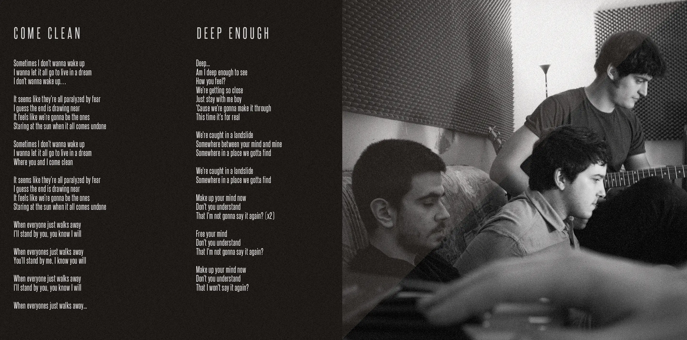
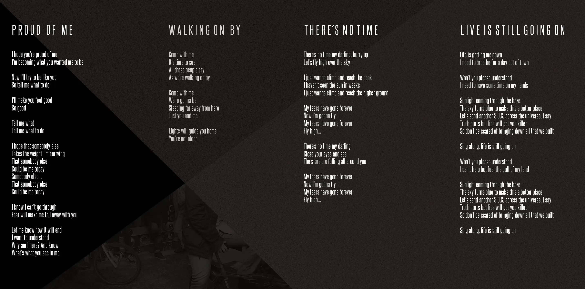
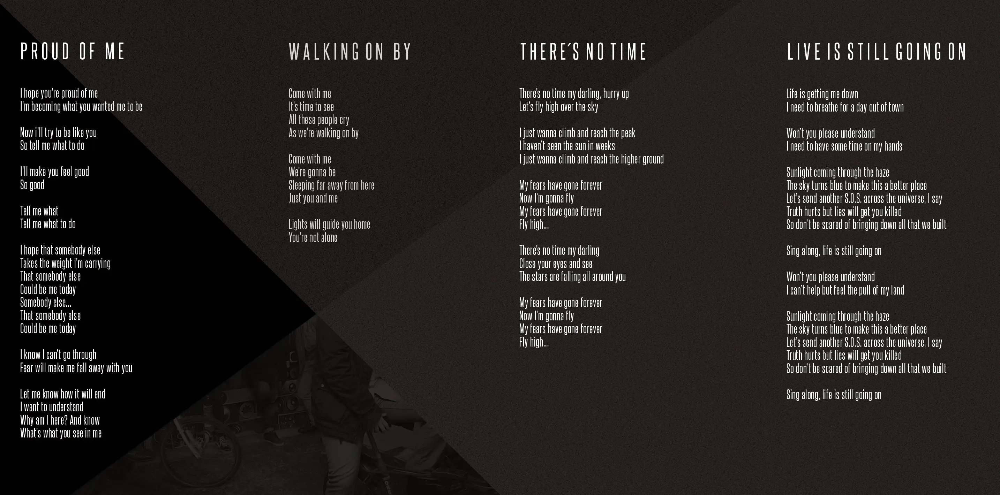
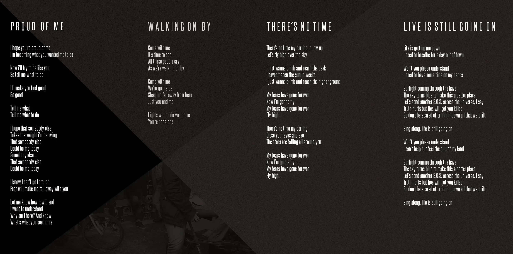

Smoke Idols
Tuve la oportunidad de maquetar el primer disco de Smoke Idols. Un grupo de música brit-rock emergente de euskadi ganador del maketa lehiaketa de Bilborock y encargados de abrir el BBK live de 2014. Entre grises, angulos rextos y filtros de estática de tv plasmé todas las letras de sus maravillosas canciones.

 


